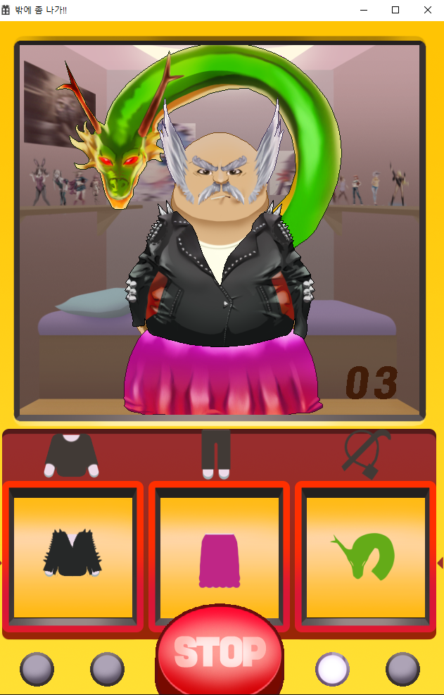

hello, i am
WHAT I DO
MY SERVICES
-
로그인,회원가입 기능의 구현
안드로이드 스튜디오
-

밖에 좀 나가
게임제작 조별 프로젝트 진행
-
따릉이 데모 사이트
HTML / SCSS / JQUERY / 반응형
-
마케터 데모 사이트
HTML / CSS / 반응형
-
마케터 데모 사이트
HTML / CSS / 반응형
ABOUT
ME
성장 과정
저는 어렸을때부터 게임을 굉장히 좋아했습니다. 그래서 저희 아버지는 게임을 한번 만들어보면 어떻겠냐 하셔서 초등학교 6학년때부터 중학교 1학년때까지 C언어 과외를 했습니다. 그 당시에는 아무래도 나이가 어리다 보니 잘 이해도 안되고 조금은 어려웠지만 꽤 재미있었습니다. 그 후 중학교 3학년, 고등학교 진학을 앞두고 서울 디지텍고등학교를 알게 되었습니다. 초등학교때 과외를 한 것이 고등학교 진학을 하는데 아주 많은 도움이 되었습니다. 그렇게 서울디지텍고등학교 게임콘텐츠과에 입학을 한 뒤 여러가지 경험을 하였습니다. 가장 재미있었던 것은 팀별 프로젝트였습니다. 프로젝트를 하면서 제 실력이 향상된 것도 크지만, 책임감이 중요하다는 것을 배웠습니다. 맡은 일을 주어진 시간안에 해내야만 하기 때문입니다. 그래서 저는 프로그램 개발 업무를 할 때에 책임감을 갖고 정확히 잘 할 자신이 있습니다. 목표를 이루어 갈 때, 가장 중요한 것은 경험이라고 생각합니다. 전공지식은 기본이고 사람과 사람의 관계경험, 다양한 분야의 경험이 복합적 시너지 효과를 낸다면 어떤 목표라도 이루는데 충분하다고 믿어 왔습니다. 그래서 여러 번의 아르바이트, 여행 등으로 특별한 경험을 하려고 애써왔습니다. 결국 도전을 시작하기 앞서 두려움을 극복하는 방법을 터득하고, 경험의 중요성을 깨달았습니다. 또한 여러가지 아르바이트를 하면서 갈등을 중재하고 해결하는 방법을 배웠습니다.
성격의 장점
- 빠르게 상황을 분석하고 가장 현명한 방법을 찾아 결단을 내립니다. 결단을 내리면 뒤도 돌아보지 않고 신속하게 추진하는 편입니다.
- 저의 장점은 솔직함입니다. 안창호 선생은 "농담으로라도 거짓말을 하지 말아라." 라고 말씀하셨습니다. 거짓 없는 솔직한 마음으로 남을 대하는 것은 좋은 지인을 많이 만드는 최고의 방법인 것 같습니다.
- 저의 장점은 매사에 최선을 다한다는 것입니다. "노력은 꿈을 실현하는 최고의 방법이다" 라는 생각으로 어떤 일이든 최선을 다합니다.
- 저의 장점은 유연한 사고입니다. 남의 조언을 잘 새겨들어 고칠 줄 알고, 새로운 것을 잘 수용하는 오픈마인드를 가지고 있습니다.
- 남의 이야기를 들어주는 게 전 즐겁습니다. 친구들의 들어주다 보면 고민이 해결되기도 하고, 기분이 좋아지기도 합니다. 이런 제 장점 덕에 저에게 고민상담을 하는 친구들이 많습니다.
- 낙천적인 저의 장점은 긍정적으로 생각하게 하고 즐겁게 모든 일을 할 수 있게 합니다.
- 저는 강한 승부욕의 소유자입니다. 1등 만이 미덕은 아니지만, 승부욕이 강하여 이겨야 직성이 풀리고, 성과를 내야 스스로 만족을 합니다.
- 역지사지의 마음으로 타인의 입장에서 생각해보는 습관을 가지고 있습니다.
- 특유의 사교성으로 어느 조직에 있든지 적응을 쉽게 하고 사람들과 빨리 친해집니다.
- 저의 장점은 긍정적인 사고를 한다는 것입니다. "하면 된다" 라는 생각은 정말 불가능한 일을 가능하게 만들 수 있는 원동력이었던 것 같습니다.
- 저는 호기심이 왕성하여 항상 새로운 것을 보면 지나치지 못하는 것이 저의 장점입니다. 이러한 저의 장점 덕에 저는 더 많은 배움을 얻었고, 더 많은 아이디어를 얻을 수 있었다고 생각합니다.
성격의 단점
- 마음이 약하고 정에 이끌리는 편이라, 친구의 부탁을 잘 거절하지 못해 여러 번 돈이나 물건을 빌려주고 받지 못한 적이 있었습니다. 그래서 상대방의 부탁에 거절을 할 때 기분이 나쁘지 않게 거절할 수 있는 커뮤니케이션 스킬을 배우고 있습니다.
- 첫인상이 냉정하다는 평가를 많이 받습니다. 그러나 조금만 저와 대화를 하다 보면, 그런 평가는 금방 없어지곤 합니다.
- 가까운 사람들에게 싫은 소리를 하지 못한다는 것이 저의 단점입니다.
- 공과 사를 확실히 구분하는 저의 성격 때문에 가끔 냉정하게 보여지기도 하는데, 이는 웃음과 인간적인 매력으로 해결하기 위해 노력하고 있습니다.
- 마감기일에 맞추어 일을 완수하지만, 세세한 세부사항까지 신경을 쓰면서 완벽을 추구하기 위하여, 남들보다 긴 시간을 갖고 준비합니다. 일의 완성도를 높이기 위해 걸리는 준비기간을 또 다른 저의 장점으로 만들기 위해 계획표를 사용하여 시간분배를 하고, 계획에 맞추어 설정하는 방법을 사용하고 있습니다. 이런 방법의 개선을 위한 노력이 결과적으로 업무의 질을 높일 수 있는 것이라 믿고 있습니다.
지원동기 및 입사 후 포부
SAY HELLO
CONTACT
Phone | 010-5670-2096
E-mail | vovo0916@naver.com
kakao | rlaalsrua0916
git | https://github.com/min0916